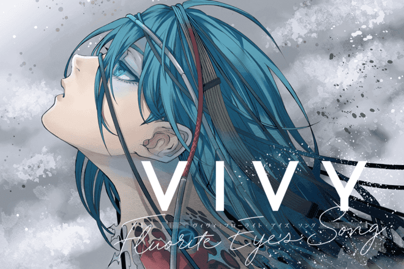

Vivy -Fluorite Eye's Song-
薇薇 -萤石眼之歌-
《薇薇 -萤石眼之歌-》是长月达平、梅原英司担任原案以及编剧，由WIT
STUDIO制作的日本原创电视动画。于2021年4月3日首播，共13集。这部原创动画久违的让我感受到了追番的感觉——“这个礼拜的vivy还没看！”，如果你也是一个大龄二次元宅，想找回点年轻时候的看番风味，这一次，可以尝试相信一下霸权社。
故事简介
在AI发展已经非常蓬勃的2161年，AI主题公园“新乐园”中的AI正在虐杀人类，而原因则无人知晓。在绝境中，松本博士赶在被追杀前以生命为代价，将一部神秘AI传送至100年前的2061年4月11日，发动“奇点计划”，希望“薇薇”能够改写历史。
2061年，史上首台自律人型AI歌姬“薇薇”启动第一年，身怀“用歌声使大家幸福”这一使命，在“新乐园”的小舞台上表演唱歌，由于技术上的限制，每部AI都只能够设定一项使命。4月11日，薇薇面前出现了自称为“松本”的AI，并表示自己是来自100年后的AI，其使命是“阻止100年后AI与人类之间发生的战争”，为了完成博士的使命，强求薇薇与它合作执行计划。最初薇薇对于松本所描述的未来感到不可置信，也觉得跟自己设定的使命无关。不过，松本以不阻止AI与人类之间的斗争会使其一直以来的使命“用歌声使大家幸福”有所冲突为由，成功说服薇薇参与奇点计划，开启了漫长的百年之旅。
“正史”上有多宗导致AI过度发展的重大事件，被称之为“奇点”。在奇点计划中，薇薇和松本需要介入并阻止同样的结果再次发生，以防止AI过度发展。然而，薇薇和松本走在“修正史”的轨迹上，发展流向已经跟正史大有不同，但背后隐藏的危机依然在蠢蠢欲动。

人物简介
- 薇薇（ヴィヴィ，Vivy）
- 2060年6月19日制造，史上首台自律人型AI，作为歌姬正式称呼为“Diva”（ディーヴァ），被首位粉丝桃佳取昵称“薇薇”，身为AI的使命是“用歌声使大家获得幸福”，并为此而全心投入歌唱。是重视约定与思念，为人类服务的AI歌姬。“松本”透露会选择其合作的主因是她是未来唯一留存至100年后的未来且最早拥有自主意识、未受到AI失控事件影响的AI。一直以来都希望唱出让人类获得幸福的歌，却不知道要如何在歌声中投入心意，“倾注心意的定义”成为影响着薇薇一生及往后百年之旅的课题。
- 松本（マツモト，Matsumoto）
- 从100年后的未来来到薇薇身边的AI，并以创造自己的松本博士为名自称。身为AI的使命是“回避AI与人类的战争”，并为此要和薇薇一起消灭AI。拥有爱说话又自信过剩、以及完全不像是AI的个性。能以极强的骇客能力对其他AI强制灌输程式、病毒或使其机体无效化。故事开始时随机附着在桃佳送给薇薇的玩具熊里作为活动工具。
其他人物
- 艾丝黛拉（エステラ，Estella）
- 葛蕾丝（グレイス，Grace）
- 欧菲莉亚（オフィーリア，Ophelia）
- 那比（ナビ，Navi）
- 亚卡布（アーカイブ，Archive）
- 露克莱尔（ルクレール，Leclerc）
- 艾莉莎白（エリザベス，Elizabeth）
- 安东尼奥（アントニオ，Antonio）
- 雾岛桃佳（霧島 モモカ，Kirishima Momoka）
- 相川要一（相川 ヨウイチ，Aikawa Youichi）
- 松本修/松本博士（松本 修 博士，Dr. Matsumoto Osamu）
- 垣谷勇吾（垣谷 ユウゴ，Kakitani Yugo
- 雾岛柚佳（霧島 ユズカ，Kirishima Yuzuka
- 冴木达也（冴木 タツヤ，Saeki Tatsuya
- 垣谷唯（垣谷 ユイ，Kakitani Yui
片段赏析
最棒的op曲插入段！这段的作画风格、镜头以及弦乐的配置都让我想起曾经很钟爱的游戏 NieR:Automata（尼尔：机械纪元）
最后设定了宽度50%试图让它看起来不那么糊……up主上传的大会员1080p高码在某些帧数高地方本就有些糊，再加上外链给的hq最高是720p，这可真的是糊上加糊
（观看调整了很多次以后）好！很有精神！还是糊的！
食我安利
写了很多关于剧情方面的简介和一些其他人物在剧情里的相关简介，最后全部删除掉了。因为我这笨嘴不管怎么写好像都是在剧透，而每个人对剧透的接受程度也是完全不一样的，掌握不好这个度的我，索性全部删除掉。
Vivy是一部平稳落地的番。
因为当时是一集一集追的，前几集的时候这部原创番的剧情就看似走进了一种“暴走”，也就是大家经常调侃的“封神回”。再加上这部番花里胡哨的科幻背景设定，很多人都在想它会以什么样的方式落地。而Vivy是平稳落地的，在这点上就足以吊打很多原创动画。
没有卖弄这个驾驭不了的科幻、AI、末世背景，也没有遇事不决量子力学，vivy在意料之中的以温暖和谐的方式落幕了，很多人对此不满，所以我的安利词中一定要讲明白：结局也许没有你想象中的那么多冲突，但是结束的也不赖（某种意义上属于扬长避短，避免往不可收拾的方向讨论），值得一看。
这部番的细节非常多，无论是埋下的线索线，还是合理的时间线，甚至是画面的联系、寓意及暗示。几乎每一集都会有关于女主角的眼睛特写镜头，非常美丽。


如果我说的话，也许讲的只是Vivy自己的成长故事吧。本番是在b站独播（好像？）的，因为某些画面，也许会被和谐成绿色的黑色的圣光暗牧之类的，追求正常的观看效果可以尝试一下其他观看手法，比如……合理观看港澳台版本或者问我们万能的神奇万维网(´▽｀)V！